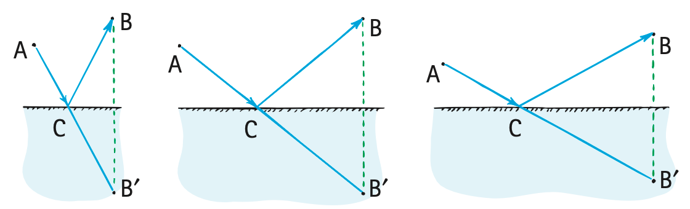
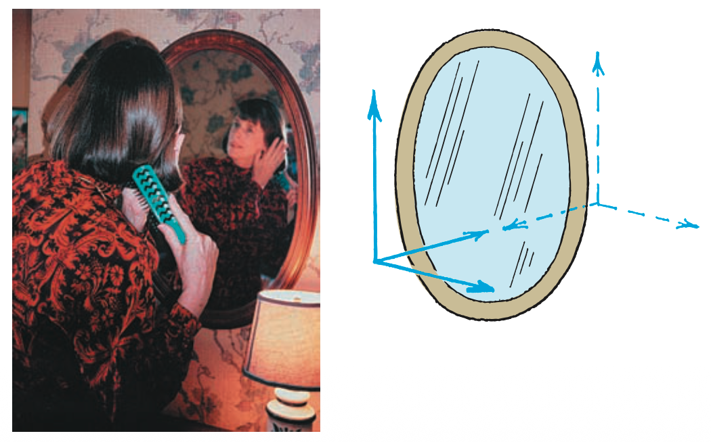
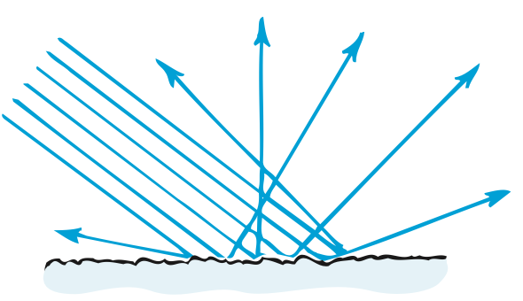
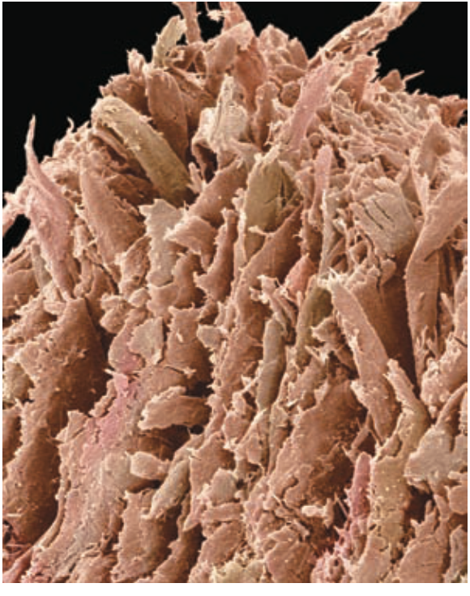

Reflection and Mirrors
Mathematical idea: Angles are measured from the normal, and the law of reflection states that the incident and reflected angles are equal.
You will label and trace reflected rays, explain why a plane-mirror image appears behind the mirror, and compare smooth-image reflection with diffuse reflection from rough surfaces.
Learning Target
Students will use the law of reflection to explain reflected light, plane mirror images, diffuse reflection, and basic mirror behavior.
I can statements
- I can define reflection as light bouncing from a surface.
- I can identify the incident ray, reflected ray, normal line, angle of incidence, and angle of reflection.
- I can apply the law of reflection to ray diagrams.
- I can explain why smooth surfaces make clear images and rough surfaces produce diffuse reflection.
- I can explain why a plane mirror image appears behind the mirror.
- I can compare real and virtual images in simple mirror situations.
Vocabulary
These are words you will see in this section. Do not define them yet.
- reflection
- incident ray
- reflected ray
- normal line
- angle of incidence
- angle of reflection
- specular reflection
- diffuse reflection
- plane mirror
- virtual image
- real image
Use the preview activity to decide which words you already know, recognize, or do not know yet. Watch for these words in bold when they are first introduced or defined in the reading.
Preview: Skim Before You Read
Directions
Before reading closely, skim the vocabulary list and the section. Look at titles, headings, bold words, pictures, captions, diagrams, tables, and formulas. Do not try to understand everything yet. Your job is to notice what already looks familiar and make predictions about what this section may explain.
Step 1 — Sort the vocabulary. Write each vocabulary word in the column that best matches what you know right now. You may move a word later.
| Know for sure | Recognize | Don’t know yet |
|---|---|---|
Step 2 — Skim the section. Record what catches your attention before you read closely.
| What I noticed | |
|---|---|
| What I predict | |
| What I wonder |
Content: Read, Look, Annotate, Apply
Directions
Read in short chunks. Annotate the prose and the figures together: underline evidence, circle or highlight bold vocabulary, label arrows or measured features, connect a sentence to an image, and write short questions or connections in the margins.
Reading 1: The Angle Rule for Reflected Light
Most objects around us are visible because incoming light is returned from their surfaces toward our eyes. When light returns into the medium from which it came, the process is called reflection. A smooth mirror makes the path especially easy to model because narrow bundles of light can be represented by rays.

Image read: Compare the three paths. Mark the point where the chosen light path touches the mirror and notice the equal-angle geometry around that point.
The incoming path is the incident ray. The outgoing path after the bounce is the reflected ray. At the point where the ray hits the surface, draw a normal line perpendicular to the surface. The angle of incidence is measured between the incident ray and the normal; the angle of reflection is measured between the reflected ray and the normal.

Image read: Cover the angle labels, then identify each ray and angle from the direction arrows and normal. Check that the angles are measured from the normal rather than from the mirror surface.
For a smooth surface, this organized ray behavior is specular reflection. The law works for every incident angle: the incident and reflected angles are equal. The ray, normal, and reflected ray lie in the same plane.
Stop and Discuss
- Why is the normal line necessary for stating the law of reflection clearly?
- Use the labeled figure to explain why measuring the angle from the mirror surface would give the wrong convention even if the drawing looked symmetric.
Teacher support: The normal provides the perpendicular reference used consistently for both rays. Measuring from the surface changes the numerical angle and is the common misconception.
$\theta_i$ is the angle of incidence and $\theta_r$ is the angle of reflection. Both are measured from the normal, not from the surface.
Example 1: A 32-degree incident ray
A ray strikes a plane mirror at an angle of incidence of $32^\circ$.
- What is the angle of reflection?
- Sketch the mirror, normal, incident ray, and reflected ray, and label both angles from the normal.
Teacher support: θr=32°. Look for a perpendicular normal and equal marked angles on opposite sides of it.
You Try It 1: Spot the measuring error
A student labels the angle between an incident ray and the mirror surface as $40^\circ$ and calls it the angle of incidence.
- Explain what is wrong with the label.
- What angle would the ray make with the normal? Use that value as the angle of incidence.
Teacher support: If the ray is 40° from the surface, it is 50° from the normal, so θi=50°.
Reading 2: Why a Plane-Mirror Image Appears Behind the Mirror
A flat reflecting surface is a plane mirror. Light from each point on an object spreads in many directions. Some rays reach the mirror and reflect toward an observer. After reflection, the rays entering the eye are diverging, but the eye–brain system interprets them as if they traveled in straight lines from a point behind the mirror.

Image read: Trace the solid reflected rays into the eye, then trace the dashed backward extensions. Mark the location where the extensions appear to meet.
The apparent image behind the mirror is a virtual image: the reflected light rays do not actually pass through that image location. For a plane mirror, the virtual image appears as far behind the mirror as the object is in front, and it has the same size as the object.

Image read: Compare the person and the reflected image. Instead of saying the mirror “switches left and right,” identify what direction perpendicular to the mirror is reversed.
A real image, by contrast, is formed where light rays actually meet; such an image can be projected onto a screen. That contrast is useful here even though a plane mirror itself forms a virtual image. The key question is whether actual rays pass through the image location or only appear to come from it.
Stop and Discuss
- Use the plane-mirror figure to explain why the image appears behind the mirror even though no light travels behind the mirror.
- What observational test distinguishes a real image from the virtual image of a plane mirror?
Teacher support: The solid rays meet only at the mirror and eye; dashed backward extensions intersect behind the mirror. A real image can be caught on a screen because rays actually converge there.
Example 2: Where is the mirror image?
A student stands 1.5 m in front of a plane mirror.
- How far behind the mirror does the image appear?
- How far is the apparent image from the student? Explain using the plane-mirror model.
Teacher support: Image is 1.5 m behind mirror; student-to-image apparent separation is 3.0 m.
You Try It 2: Virtual or real?
Two students argue about an image behind a plane mirror. One says, “The light rays meet behind the glass.” The other says, “The rays only appear to come from there.”
- Which statement matches the ray diagram?
- Use the terms virtual image and reflected ray in your explanation.
Teacher support: Second student is correct. The plane-mirror image is virtual; actual reflected rays remain in front of the mirror.
Reading 3: Smooth Surfaces, Rough Surfaces, and Diffuse Reflection
A smooth surface sends a bundle of parallel incident rays into an organized set of reflected directions, which can preserve the ray pattern needed for a clear image. A rough surface has many tiny surface orientations. Each tiny patch still follows the law of reflection, but the local normals point in different directions.

Image read: Draw a short normal at several different bumps on the surface. Use those changing normals to explain the fan of reflected directions.
Reflection into many directions from a rough surface is called diffuse reflection. It does not produce a mirror image, but it is essential for everyday vision. A page, wall, or road can send reflected light toward observers in many different positions.

Image read: Connect the microscopic roughness of the paper to the absence of a mirror image even though the page reflects enough light to be visible.
The distinction depends on surface smoothness compared with the wavelength of the radiation. A surface can be rough for short-wavelength visible light yet act smoother for much longer radio waves. The law of reflection is not being broken; the directions of the many local normals are different.
Stop and Discuss
- Why can you see a sheet of paper from many directions even though the page does not form a mirror image?
- Explain how every tiny patch can obey the law of reflection while the overall reflected light still spreads in many directions.
Teacher support: Paper’s many microfacets have differently oriented normals, so reflected rays spread. Each local reflection still has equal incidence/reflection angles.
Example 3: Still water and rippled water
A calm part of a lake shows a clear reflection of trees, while a nearby rippled part does not.
- Which region shows more specular reflection and which shows more diffuse reflection?
- Explain the difference in terms of the surface normals.
Teacher support: Calm = more specular/organized; rippled = more diffuse because normals vary across the surface.
You Try It 3: Why wet roads can be harder to see
The textbook notes that a dry road can be easier to see at night than a wet road because the reflection pattern changes.
- Explain why strong specular reflection can reduce the diffuse light sent toward some observers.
- Describe one viewing position where reflected glare might instead become stronger.
Teacher support: A smoother wet surface can redirect more light into selected specular directions and less diffusely toward a driver. If observer lies near the specular direction, glare can increase.
Vocabulary: Define the Terms
You have now seen these words in the reading, images, and practice. Use this table to consolidate the physics meaning of each term.
| Vocabulary term | Definition |
|---|---|
| reflection | The return of light into the medium from which it came after it reaches a surface. |
| incident ray | The ray traveling toward a surface before reflection. |
| reflected ray | The ray traveling away from a surface after reflection. |
| normal line | An imaginary line perpendicular to a surface at the point where a ray strikes. |
| angle of incidence | The angle between the incident ray and the normal. |
| angle of reflection | The angle between the reflected ray and the normal. |
| specular reflection | Organized reflection from a smooth surface that can preserve clear image information. |
| diffuse reflection | Reflection in many directions from a rough surface. |
| plane mirror | A flat mirror. |
| virtual image | An image at a location from which rays only appear to come; the rays do not actually pass through that point. |
| real image | An image formed where light rays actually meet, so it can be projected onto a screen. |
Summary
- Reflection returns light to the original medium.
- $\theta_i=\theta_r$, with both angles measured from the normal.
- Plane mirrors form same-size virtual images that appear the same distance behind the mirror as the object is in front.
- A virtual image is located by backward extensions of rays; a real image forms where rays actually meet.
- Smooth surfaces produce organized specular reflection; rough surfaces produce diffuse reflection while each local patch still obeys the law of reflection.
Teacher support: Summary emphasis: Reflection returns light to the original medium. $\theta_i=\theta_r$, with both angles measured from the normal. Plane mirrors form same-size virtual images that appear the same distance behind the mirror as the object is in front.
Common Mistakes
| Mistake | Why it is tempting | Check instead |
|---|---|---|
| Measuring reflection angles from the mirror surface. | The surface is the most obvious line in the picture. | Draw the perpendicular normal first; measure both angles from it. |
| Saying reflected rays actually travel behind a plane mirror. | Backward extensions meet there in the diagram. | Separate solid actual rays from dashed apparent extensions. |
| Saying a mirror “reverses left and right.” | Writing and hand positions look reversed. | Describe the front-back direction relative to the mirror; ray paths are what determine the view. |
| Thinking diffuse reflection breaks the law of reflection. | The outgoing rays point many directions. | Use a different local normal for each tiny surface patch. |
What is the name of the line drawn perpendicular to a mirror at the point where a ray strikes?
An object is 0.80 m in front of a plane mirror. State where its image appears and explain why the image is virtual.
What is one thing you learned in this section? Explain it in at least one complete sentence.
What is one thing from this section you still need to understand or practice more? Be specific.